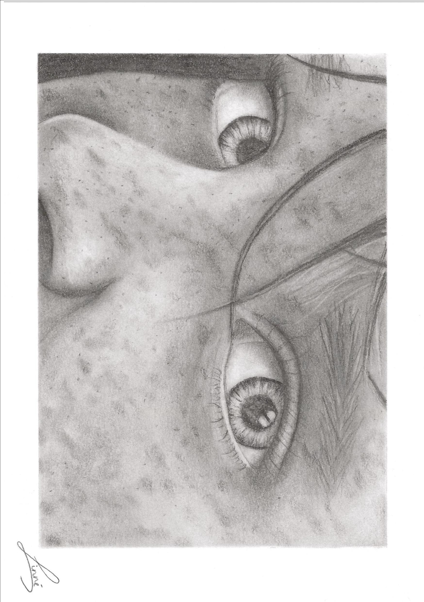
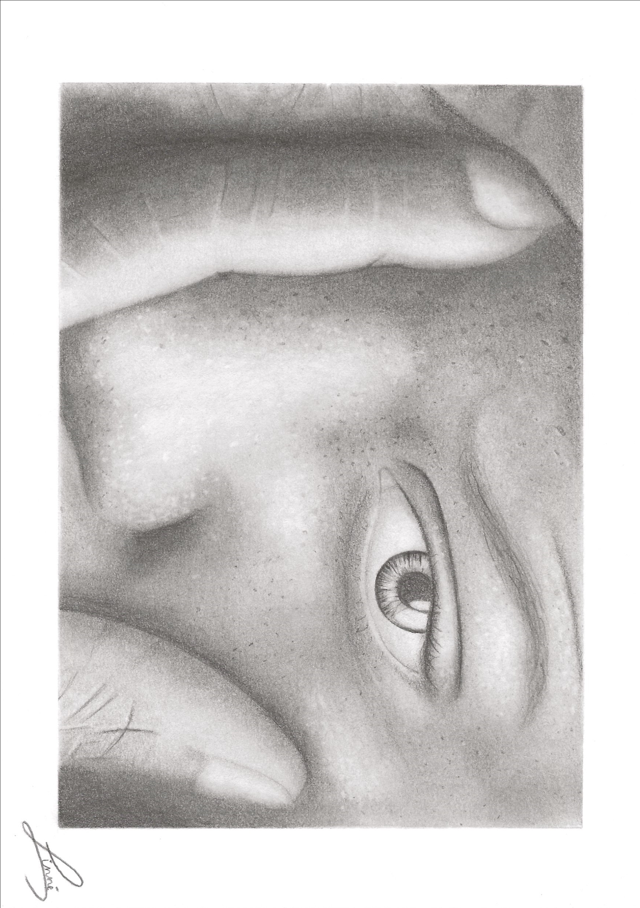
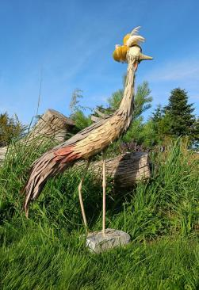
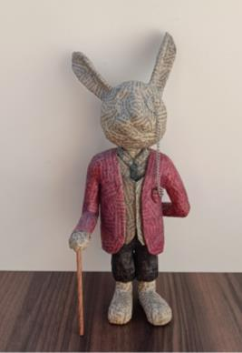
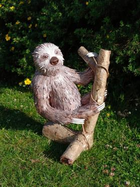
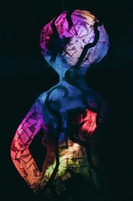
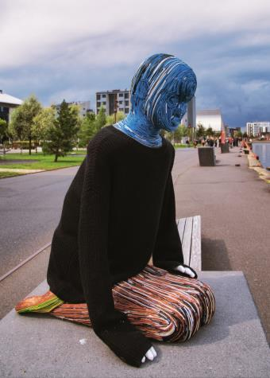

Building, creating, and blending worlds together.
I have always been drawn to building and creating. This portfolio offers a glimpse into my personal projects and the working process that shapes how I think and solve problems.

Taking the time to do it well
I draw hyperrealistic portraits because immersing myself in the process brings me a great sense of calm. By working with textures and the way light moves across an eye, I have learned how much care and attention can transform a result.
It is a patient process that teaches me to analyse structures and patterns so a piece becomes precise without losing sight of the whole. The satisfaction of focusing deeply and watching a result take shape is a strong driving force for me.






The structure that carries the expression
When I build sculptures, I focus on form, space, and aesthetics. Although the focus is on the exterior, the internal supporting structure is essential to the final expression.
If the foundation is not built properly from the beginning, the whole piece can collapse. That is why the entire process matters to me, from the first structure to the final surface. Every step and material choice contributes to a result that works in a space and can support itself.




Two worlds coming together
I am fascinated by how different materials and disciplines can be combined. For me, it is about building bridges between different worlds to create a unique experience.
Whether through light, sound, movement, or other elements, the goal is always to create something that gives value to others. The technology itself is not the most important part; what matters is that the final result speaks to its audience.


